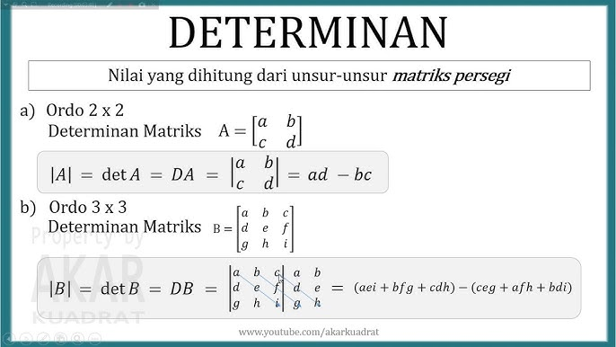
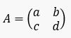
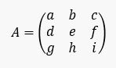
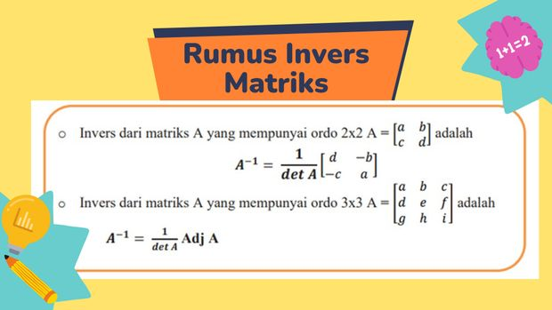
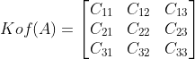
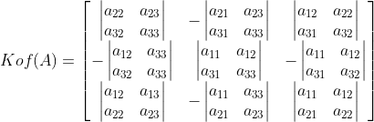
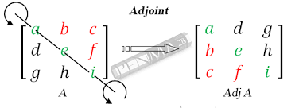

MATRIKS
Determinan
Pengertian
Determinan adalah nilai yang dapat dihitung dari unsur-unsur suatu matrik persegi. nilai yang dapat dihitung dari unsur suatu matriks persegi. Determinan matriks A ditulis dengan tanda det(A), det A, atau |A|. Determinan dapat dianggap sebagai faktor penskalaan transformasi yang digambarkan oleh matriks.
Determinan memiliki 2, yaitu determinan ordo 2x2 dan determinan ordo 3x3

Determinan ordo 2x2
Misalkan kita punya matrik A yang elemennya a,b,c,d yang ditulis seperti ini :
Maka determinan A akan kita tuliskan :
Det A= |A|
Cara menghitung determinan 2x2 yaitu :

Mudah bukan cara menghitung Determinan ordo 2x2
Determinan ordo 3x3
Cara menentukan determinan 3 x 3 yaitu dengan cara sarrus.
misal kita memiliki matriks A :
berikut adalah tahap tahap nya :
Determinan disusun ulang dengan penambahan 2 baris dan 3 kolom kemudian buat garis diagonal ke kanan ( warna merah ) dengan operasional
kemudian buat garis diagonal ke kanan ( warna merah ) dengan operasional penjumlahan kemudian diagonal ke kiri (garis hijau) dengan operasional pengurangan.
kita kalikan mengikuti garis sehingga akan kita dapatkan rumus menentukan determinan matriks 3 × 3 sebagai berikut:
|A| =a.e.i + b.f.g + c.d.h – c.e.g – a.f.h – b.d.i

Invers
Pengertian
Invers matriks adalah sebuah kebalikan (invers) dari kedua matriks. Apabila matriks tersebut dikalikan akan menghasilkan matriks persegi (AB = BA = |). Simbol dari invers matriks adalah pangkat -1 dan terletak di atas hurufnya. Sebagai contoh, matriks B adalah invers matriks A sehingga ditulis B = A–1 dan matriks A adalah invers dari matriks B ditulis A = B-1. Matriks A dan B merupakan dua matriks yang saling invers (berkebalikan). Invers matriks terdiri dari dua jenis, yaitu matriks persegi 2×2 dan matriks 3×3.

Invers ordo 2x2
Rumus dari Invers ordo 2x2 yaitu

langkah langkah menyelesaikannya yaitu :
Tukar elemen-elemen pada diagonal utamanya.
Berikan tanda negatif pada elemen-elemen lainnya.
Bagilah setiap elemen matriks dengan determinannya.
Invers ordo 3x3
Rumus dari ordo 3x3 yaitu :

Untuk menentukan determinan matriks 3×3, kita bisa menggunakan dua cara, yaitu metode Sarrus dan Minor-Kofaktor.
Cara menentukan kofaktor matriks aij, yaitu Cij = (-1)i+jMij, di mana Mij adalah minor dari matriks Aij, sedangkan Cij adalah kofaktor A atau Kof(A).

Berarti, C11 = (-1)^1+1 M11=M11 , C12= (-1)^1+2 M12= –M12 , dst sampai dihasilkan seperti ini.

Selanjutnya kita cari determinannya, dengan cara Mij = det(Aij). Misalnya kita ambil contoh M11 = det(A11) =
(menghilangkan elemen baris ke-1 dan kolom ke-1, sehingga hanya diperoleh ordo 2×2 untuk setiap elemennya), dst sehingga diperoleh seperti ini.

Adjoint
Pengertian
Adjoin matriks merupakan tranpose dari matriks kofaktor. Adjoin sering disingkat dengan Adj. Misalkan matriks A, maka adjoin A ditulis Adj (A).
Tranpose sendiri maksudnya adalah pertukaran elemen pada baris menjadi kolom atau kolom menjadi baris. Adjoin matriks digunakan dalam menentukan invers matriks.
Berikut Sifat Sifat dari Adjoin :
Jika 0 adalah matriks nol dan I adalah matriks identitas maka, adj (0) = 0 dan adj (I) = I
adj(B^T) = adj(B)^T , di sini B^T adalah transpos dari matriks B
Adjoint dari matriks B dapat didefinisikan sebagai hasil perkalian B dengan adjoint-nya yang menghasilkan matriks diagonal yang entri diagonalnya adalah determinan det(B). B adj(B) = adj(B) B = det(B) I, di mana I adalah matriks identitas.
Misalkan C adalah matriks persegi, maka adj(BC) = adj(C) adj(B)
Untuk setiap bilangan bulat non-negatif k, adj(B^k) = adj(B)^k.
Adjoin dari matriks diagonal adalah matriks diagonal lagi.
Kelompok 4
M Takhlis Griska Rafi (070)
Josua Moreno Silitonga (091)
Pniel Alfrado Salakay (092)